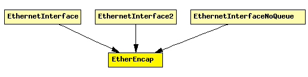

File: NetworkInterfaces/Ethernet/EtherEncap.ned
C++ definition: click here
Performs Ethernet II encapsulation/decapsulation.
Expected environment:
Functionality:
The following diagram shows usage relationships between modules, networks and channels. Unresolved module (and channel) types are missing from the diagram. Click here to see the full picture.
If a module type shows up more than once, that means it has been defined in more than one NED file.
| EthernetInterface | Ethernet network interface. Corresponds to the prototype NetworkInterface. Complements EtherMAC and EtherEncap with an output queue for QoS and RED support. |
| EthernetInterface2 | Ethernet network interface, which supports full-duplex operation only. Corresponds to the prototype NetworkInterface. Complements EtherMAC2 and EtherEncap with an output queue for QoS and RED support. |
| EthernetInterfaceNoQueue | Ethernet network interface. Assumes inifinite queue. |
| Name | Type | Description |
|---|---|---|
| writeScalars | bool | enable/disable recording statistics in omnetpp.sca |
| Name | Direction | Description |
|---|---|---|
| upperLayerIn | input | higher layer |
| upperLayerOut | output | higher layer |
| lowerLayerIn | input | to Ethernet MAC |
| lowerLayerOut | output | to Ethernet MAC |
simple EtherEncap parameters: writeScalars: bool; // enable/disable recording statistics in omnetpp.sca gates: in: upperLayerIn; // higher layer out: upperLayerOut; // higher layer in: lowerLayerIn; // to Ethernet MAC out: lowerLayerOut; // to Ethernet MAC endsimple